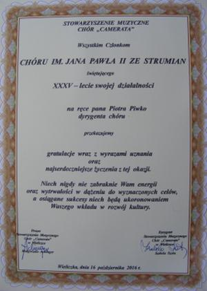
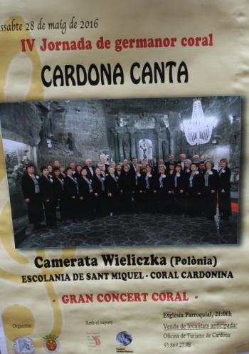
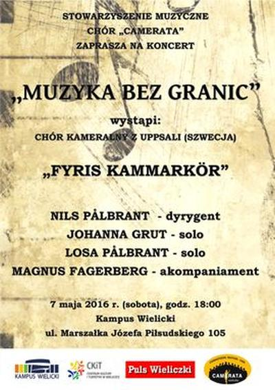
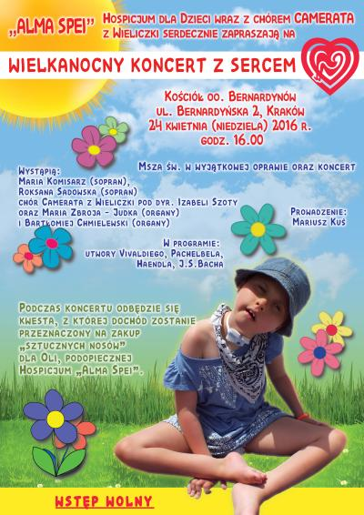
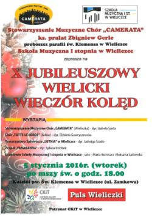

Aktualności archiwalne
Rok 2016
2016-12-20
Kolędujemy. Spotkanie Cameraty. czytaj dalej ...2016-12-16
Wieczór kolęd z UTW. czytaj dalej ...2016-11-13
I Powiatowy Przegląd Pieśni Patriotycznych w Kłaju. czytaj dalej ...2016-11-11(wieczorem)
Dalszy ciąg obchodów 11 listopada, czyli wielki koncert w Centrum Edukacyjno-Rekreacyjnym „Solne Miasto” pod hasłem „Albo będziemy wielcy, albo nie będzie nas wcale”. czytaj dalej ...2016-11-11 (rano)
11 listopada 98 rocznica odzyskania niepodległości. czytaj dalej ...2016-11-09
Śpiewamy pieśni patriotyczne dla uczniów Zespołu Szkół im. Brata Alojzego Kosiby w Wieliczce. czytaj dalej ...2016-10-16
35 - lecie Chóru Jana Pawła II w Strumianach
czytaj dalej ...
2016-10-15
Warsztaty muzyczne Cameraty. czytaj dalej ...2016-09-15
Spotykamy się pierwszy raz po wakacjach. czytaj dalej ...2016-09-03
Witamy po wakacjach wszystkich, którzy zaglądają na naszą stronę!!! czytaj dalej ...25do29-05-2016
Dzisiaj lecimy do Katalonii (Hiszpania). Na zaproszenie organizatora IV edycji Festiwalu Chórów „Cardona Canta” w Cardonie (Katalonia), Pana Ovidi de Cardona - szefa Działu Muzyki Dawnej przy Urzędzie Miasta Cardona, z polecenia eksperta ds. promocji i kultury Konsulatu Generalnego RP w Barcelonie p. Hanny Podolskiej.
czytaj dalej ...
2016-05-07
Koncert szwedzkiego, kameralnego chóru „Fyris” z Uppsali i „Cameraty” w Kampusie Wielickim.
czytaj dalej ...
2016-05-03
Trzeci Maja w Wieliczce. czytaj dalej ...2016-04-30
Msza Św. w kościele p.w. św. Pawła Apostoła w Krzyszkowicach - oprawa ślubu. czytaj dalej ...2016-04-24
Msza Św. i koncert charytatywny w kościele OO. Bernardynów w Krakowie. czytaj dalej ...2016-04-06
ZAPRASZAMY na wspaniały koncert charytatywny, który odbędzie się 24 kwietnia 2016 Koncert zaczynamy o godz.16.00 Mszą Św. w kościele OO. Bernardynów w Krakowie.
2016-04-03
Koncert w Campus Misericordiae z okazji poświęcenia Dzwonu Miłosierdzia - Brzegi czytaj dalej ...10-01-2016
Dzisiaj w Sanktuarium Matki Bożej Gdowskiej odbędzie się VII Koncert Kolęd, zorganizowany przez Publiczną Szkołę Muzyczną I stopnia w Gdowie, na który jesteśmy zaproszeni. czytaj dalej ...05-01-2016
X Jubileuszowy Wielicki Wieczór Kolęd.
czytaj dalej ...
03-01-2016
Dzisiaj obchodzimy 77 rocznicę śmierci Sługi Bożego Br. Alojzego Kosiby.O godz. 10.30 sprawowana będzie uroczysta Msza św. koncelebrowana w intencji rychłej beatyfikacji Sługi Bożego, z udziałem pielgrzymów z Libuszy, rodzinnej miejscowości Br. Alojzego. Mszy św. przewodniczyć będzie Prowincjał, o. Rufin Maryjka oraz o. Alojzy Warot – wicepostulator procesu beatyfikacyjnego Sługi Bożego Br. Alojzego Kosiby. czytaj dalej ...

© Stowarzyszenie Muzyczne Chór Camerata Wieliczka
Projekt i wykonanie:  Prowadzenie strony: Małgorzata Wysocka-Cebula
Prowadzenie strony: Małgorzata Wysocka-Cebula